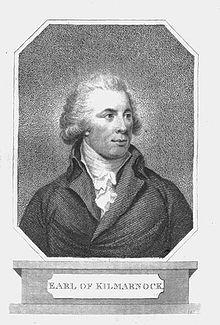

The Earl of Kilmarnock's Lament
Lamentations du Comte de Kilmarnock
from Peter Buchan's MS. collection

William Boyd (1704 – 18 August 1746), 4th Earl of Kilmarnock
Tune - Mélodie
Possibly "Eppie Marly"
(Cf. Eppie Marly )
Sequenced by Christian Souchon
|
To the tune:
The song is supposed to be addressed by the Earl of Kilmarnock to his Countess, but her name was not Eppie, it was Anne (Lady Anne Livingstone whom he married in 1725). The reason for that change could be that the lyrics are written to the tune "Eppie Marly". Source: Peter Buchan's collection of MS, published in "Jacobite Songs and Ballads" by Gilbert S. McQuoid, in 1888, N°120, page 253. |
A propos de la mélodie:
Ce chant est censé être adressé par le comte de Kilmarnock à son épouse. Mais son prénom n'était pas Eppie, mais Anne (Lady Anne Livingstone qu'il épousa en 1725). La raison de cette modification est peut-être que l'air sur lequel ces paroles se chantent est "Eppie Marly". Source: Recueil de manuscrits de Peter Buchan, publié dans "Jacobite Songs and Ballads" par Gilbert S. McQuoid, N°120, page 253 dans l'édition de 1888. |

|
THE EARL OF KILMARNOCK'S LAMENT. [1]
1. Hey, my Eppie, And now, my Eppie, Sae lang will she think it ere she see me now ; In strong prison I lie, Without power to fly, And I'll never return to my Eppie, I trow. CHORUS: Farewell to my Eppie, My wish be wi' Eppie, Too soon will my Eppie receive my adieu My sentence is past, The morn's my last, And I'll never win hame to my Eppie, I trow. 2. O Eppie, my dearest, O Eppie, my fairest, Sae mony sweet days I have spent wi' you ; Now cauld are my hands, In stern iron bands, I'll never mair stretch them, dear Eppie, to you. Farewell to my Eppie, etc. 3. The charge is prepared, The lawyers are fared, The judges have raised a terrible show; I gang undismayed, My life it will pay it, A debt of demands, sae take what I owe. [2] Farewell to my Eppie, etc 4. With the trumpet's loud sounding, The city's rebounding, We that are poor pannels to our sentence maun bow, For the morn's the knell Of our sepulchre's bell, And 'twill be a sad start to my Eppie, I trow. Farewell to my Eppie, etc. 5. But tho' I maun die, I boldly defy My foes for to say that my crime I do rue; [3] Nor need my proud kin Be ashamed of my sin, But sad will the heart o' my Eppie be now. Farewell to my Eppie, etc. 6. Good angels be keeping Her while she is sleeping, Lest visions present my sad fate to her view ; And when I am dead, Support her widowed head, For sad will the heart o' my Eppie be now. Farewell to my Eppie, etc. Song from Peter Buchan's MS Collection quoted in "Jacobite Songs and Ballads" collected by Gilbert S. McQuoid, 1888, N°120, page 253. |
LAMENTATIONS DU COMTE DE KILMARNOCK [1]
1. Adieu ma chère Eppie, Adieu ma chère Eppie, Combien de temps hélas avant de nous revoir? Dans la prison je gis, D'où m'enfuir je ne puis, De te revoir un jour j'ai perdu tout espoir. REFRAIN: Adieu donc, mon Eppie, Tu me manques, Eppie. Il est bien tôt, hélas, pour ce précoce adieu. Tu viens donc enfin, Dernier matin, Sans que jamais Eppie ne paraisse à mes yeux. 2. O, Epie, ma chérie, O, Eppie, ma jolie, Que de jours de bonheur, j'ai vécus près de toi Comme mes mains sont froides Dans leurs chaînes et roides Je ne les tendrai plus en entendant ta voix. Adieu donc, mon Eppie... 3. Le verdict prononcé, Les avoués honorés, Pour le hideux spectacle, qu'on dresse l'échafaud! De ma vie j'ai payé Mon équanimité. Pour mes autres dettes, vous prendrez ce qu'il faut. [2] Adieu donc, mon Eppie... 4. La trompette qui sonne La ville qui bourdonne: Comment dévierions-nous la marche du destin? Le glas résonne tôt Il m'appelle au tombeau. Ma pauvre Eppie, pour toi quel sinistre matin! Adieu donc, mon Eppie... 5. Et bien que condamné Je veux encor défier L'ennemi qui veut que j'exprime des regrets. [3] Car ni moi, ni les miens N'ont à rougir de rien- Mon seul regret: savoir le cœur d'Eppie brisé. Adieu donc, mon Eppie... 6. Que les anges protègent Ton sommeil et tes rêves: De mon sort qu'ils en chassent l'horrible vision; Et quand je serai mort Qu'ils soutiennent encor La jeune veuve au cœur brisé par l'affliction. Adieu donc, mon Eppie... (Trad. Christian Souchon (c) 2010) |
|
[1]
William Boyd
(1704 – 18 August 1746), 4th Earl of Kilmarnock, was educated at Glasgow. Like
his father
in the rebellion of 1715, William initially supported the Government side, but in the rebellion of 1745, owing either to a personal affront or to the influence of his wife or to his straitened circumstances he deserted George II and joined Charles Edward Stuart, the Young Pretender. After his capture at Culloden he said to the Duke of Argyll: "For the two kings and their rights, I cared not a farthing [...] But I was starving and, by God, if Mahomet had set up his standard in the Highlands I had been a good Mussulman for bread, and stuck close to the party, for I must eat".
Made a Privy Counsellor to Charles , he was appointed a colonel of guards and subsequently a general . He fought at Falkirk and Culloden, where he was taken prisoner, and was beheaded on Tower Hill on 18 August 1746. [2] Before his execution, he wrote to a friend from prison about his indebtedness to the shoemakers of Elgin : "Beside my personal debts mentioned in general and particular in the State, there is one for which I am liable in justice, if it is not paid, owing to poor people who gave their work for it by my orders. It was at Elgin in Murray, the Regiment I commanded wanted shoes. I commissioned something about seventy pair of shoes and brogues, which might come to 3 shillings or three shillings and sixpence each, one with the other. The magistrates divided them among the shoemakers of the town and country, and each shoemaker furnished his proportion. I drew on the town, for the price, out of the composition laid on them, but I was afterwards told at Inverness that, it was believed, the composition was otherwise applied, and the poor shoemakers not paid. As these poor people wrought by my orders, it will be a great ease to my heart to think they are not to lose by me, as too many have done in the course of that year, but had I lived I might have made some inquiry after: but now it is impossible, as their hardships in loss of horses and such things, which happened through my soldiers, are so interwoven with what was done by other people, that it would be very hard, if not impossible, to separate them. If you'll write to Mr Innes of Dalkinty at Elgin (with whom I was quartered when I lay there), he will send you an account of the shoes, and if they were paid to the shoemakers or no; and if they are not, I beg you'll get my wife or my successors to pay them when they can......" Source: Chisholm, Hugh, ed (1911). Encyclopædia Britannica (Eleventh ed.). Cambridge University Press [3] Though the present song seems to assert the contrary, Kilmarnock unlike Lord Balmerino , who was executed on the same day, professed repentance of his rebellion during his trial at Westminster Hall. He claimed the credit of having voluntarily surrendered himself at Culloden (in fact he had mistaken a party of royal dragoons for the Jacobite Fitzjames's horse), expressed the deepest contrition for his past conduct and assured he would employ his last moments in fervent prayers for the preservation of the House of Hanover... Arthur Elphinstone, 6th Lord Balmerino (1688 - 1746) read out a "treasonable" speech and added: "If I had a thousand lives, I would lay them all down in the same cause" .(see "From Great Dundee" , notes 1 and 2). |
[1]
William Boyd
(1704 -18 août 1746), 4ème comte de Kilmarnock fit ses études à Glasgow. Comme
son père
lors du soulèvement de 1715, il commença par soutenir le pouvoir, puis en raison d'un affront personnel ou sous la pression de sa femme, ou pour des questions d'argent, il abandonna Georges II et rejoignit Charles Edouard, le Jeune prétendant. Après son arrestation à Culloden, il déclara au Duc d'Argyll: "Je me souciais comme d'une guigne des deux rois et de leurs droits [...] Mais j'avais faim et, ma foi, si Mahomet avait levé son étendard dans les Highlands, je me serais fait Musulman pour manger et je n'en aurais pas démordu."
Charles le nomma conseiller privé et colonel de sa garde, puis il le fit général . Il combattit à Falkirk et Culloden, où il fut fait prisonnier. Il fut décapité à la Tour de Londres le 18 août 1746. [2] Avant son exécution, il écrivit de sa prison une lettre à un ami à propos de sa dette envers les cordonniers d'Elgin: "Outre mes dettes personnelles, générales et particulières énumérées dans la sentence, il en est une dont je suis légalement responsable si elle reste impayée, envers de pauvres gens qui ont travaillé sur mes ordres. C'était à Elgin en Murray. Le régiment que je commandais avait besoin de chaussures. J'ai commandé environ 70 paires de bottes et de souliers au prix de 3 shillings ou 3 shillings et demi la paire en moyenne. Les édiles ont réparti la commande entre les cordonniers de la ville et de la campagne et chacun d'eux a fourni son lot. J'ai fait une traite du total sur la ville à valoir sur l'imposition qu'elle devait supporter, mais j'ai appris plus tard, à Inverness, qu'on croyait que l'imposition était appliquée autrement et que les pauvres cordonniers n'étaient pas payés. Comme ces malheureux ont travaillé à ma demande, je serais grandement soulagé de savoir qu'ils n'ont rien perdu par ma faute, comme ce fut si souvent le cas cette année, omissions que j'aurais réparées si j'avais vécu. Mais à présent c'est impossible, car les pertes en chevaux ou autres, occasionnées par mes soldats sont si étroitement mêlées à des fautes commises par d'autres, qu'on serait bien en peine de les isoler. Pourriez-vous écrire à M. Innes de Dalkinty à Elgin (chez qui je logeais alors) pour lui demander de vous envoyer le relevé des chaussures en précisant si elles ont été payées aux cordonniers. Si ce n'est pas le cas, vous voudrez bien demander à ma femme ou à mes héritiers de le faire dès qu'ils le pourront..." Source: Chisholm, Hugh, ed (1911). Encyclopædia Britannica (Eleventh ed.). Cambridge University Press [3] Bien que le présent chant semble affirmer le contraire, Kilmarnock, à la différence de Lord Balmerino qui fut exécuté le même jour, déclara regretter de s'être rebellé pendant son procès à Westminster Hall. Il allégua qu'il s'était rendu volontairement à Culloden ( en fait il avait pris un détachement de la cavalerie royale pour les chevau-légers de Fitzjames), exprima le plus profond regret pour sa conduite passée et assura qu'il consacrerait ses derniers instants à prier pour le salut des Hanovre... Arthur Elphinstone, 6ème Lord Balmerino (1688 - 1746), quant à lui, lut une déclaration "hautement subversive" et conclut: "Si j'avais mille vies, je les sacrifierais à la même cause!" (Cf. "Depuis le Grand Dundee" , notes 1 et 2). |
|
|
|